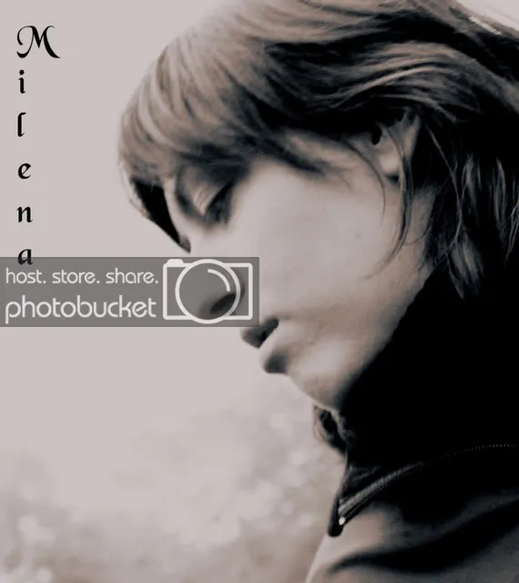

настоящее имя Milena Grammatikopulo,

Родилась 28 октября 1978 года в Риге.
Росла гиперактивным ребёнком, благодаря чему не уживалась в учебных заведениях.
Её постоянно можно было застукать за избиением мальчишек.
Уже с детства её отправили заниматься музыкой по классу фортепиано.
На тот период времени большого энтузиазма учеба у Милены не вызывала, засчёт чего она
часто сачковала и закончила только 4 класса.
Несмотря на это, она стала единственной сдавшей экзамен на "отлично".
Война с мамой закончилась, и со школы она ушла.
Уговоры учителей остаться не увенчались успехом.
Стоит ли упоминать о том, что Милена теперь об этом жалеет?
Наверно, каждый, кто занимался музыкой,с этим сталкивался. Ведь всё это зависит от упорства наших родителей дойти до конца.
Мама всё-таки не справилась с энергетическим вампиром, который в будущем внезапно сядет за гитару и начнёт писать песни - одну за другой.
Тогда Милене было 15, и песни пелись друзьям. Позже они позабудутся или останутся лишь в воспоминаниях о том времени. Ведь тогда они нигде не записывались.
И вот прошло много лет. Гитара уже запылилась. И на Милену нашло спонтанное вдохновение - рождается песня "Я иду шагами", которая была написана по частям.
Уже в зародышевом состоянии она привлекает внимание окружающих и доходит до студии звукозаписи, где отец проявляет к ней большой интерес. В будущем, с его помощью создаются трэки, над которыми трудились Марис Приеде и Артурс Палкевич (Credo).
Гармонии оказались не совсем простыми и стандартными, и на аранжировки ушло немало времени.
И вот первый трэк "Я иду шагами" попадает на несколько радиостанций и становится победителем передачи "Знай наших" на одной из популярнейших радиостанций - Mix Fm 102.7.
Далее рождаются следующие песни, в их числе и следующий хит "К весне", более всего полюбившийся публике, а также ставший заочным участником интернет-голосования на отбор Фабрики Звёзд 7, где песня занимает 1-ое место по количеству зрительских симпатий.
Позже эта же песня становится участницей топа www.freetime.lv, в котором она становится победительницей за февраль месяц и занимает 1-ое место.
Песни крутятся на таких популярных радиостанциях как:
Pik 100 Fm,
SWH+,
Radio SWH Rock,
Mix Fm 102.7.
Милена дает выступления в клубах:
Vodoo,
Dolls,
Enigma и др.
Вскоре, она создает свою группу и набирает музыкантов.
Идёт долгая подготовка и с 2008-ого года группа начинает свою концертную деятельность
в таких клубах как:
Saksofons,
Depo,
Fashion Сlub,
Micrecbārs,
Faraons,
Hot Rio,
а также принимает участие в проекте Urban Playground, где музыканты выходят в полуфинал и становятся одними из 18-ти участников.
Они также дают качественное 45-тиминутное выступление у торгового центра Ориго в стеклянной коробке-аквариум.
Позже их приглашают на летний рок-фестиваль в Эстонии - Lelle alternatiiv 2008.
Группа продолжает свою работу, появляются новые песни, выступления и планы на будущее о создании альбома.